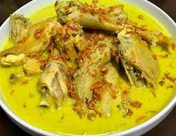

Opor Ayam

Opor ayam is an Indonesian chicken dish originating from the central to Eastern parts of the Java islands.
This is usually served to enliven Ramadan in our tradition, along with ketupat and sambal goreng kentang (chile-fried potato).
Ingredients
- 1 pound chicken, cut into 8 pieces
- 1 lemon, juiced
- 4 candlenuts
- 1 teaspoon ground coriander
- 1/2 teaspoon cumin seeds
- 7 shallots, peeled
- 5 cloves garlic, peeled
- 1 tablespoon chopped galangal
- 1\2 tablespoon chooped ginger
- 3 tablespoons vegetable oil
- 3 bay leaves
- 1 teaspoon salt
- 1\2 teaspoon white sugar
- 3 1/3 cups thin coconut milk
- 1 cup thick coconut milk
Steps
- Soak chicken pieces in lemon juice for 30 minutes.
- Meanwhile, heat a dry skillet over medium heat. Toast candlenuts, coriander, and cumin in the skillet until fragrant, about 1 minute.
Transfer to a large mortar and pestle and grind into a paste with shallots, garlic, galangal, ginger, peppercorns, and turmeric. Work in batches if necessary.
- Heat oil in a large skillet over medium heat. Add spice paste and stir until aromatic, 2 to 3 minutes.
Add lemongrass, tamarind juice, lime leaves, bay leaves, salt, and sugar.
- Rinse lemon juice off chicken pieces and slide them into the skillet. Turn to coat evenly with spices.
Pour in thin and thick coconut milk. Simmer until flavors combine, about 30 minutes. Add basil leaves. Continue cooking until chicken is tender, about 15 minutes more.
- Serve chicken and sauce in a bowl, sprinkled with fried shallots.